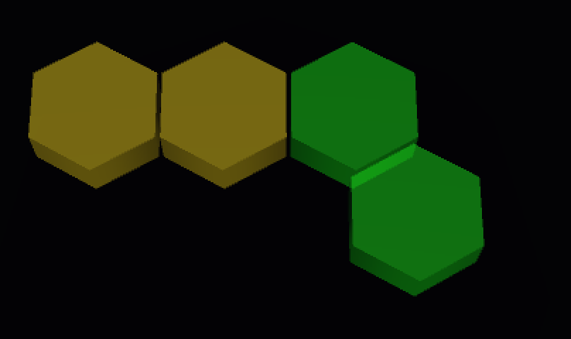
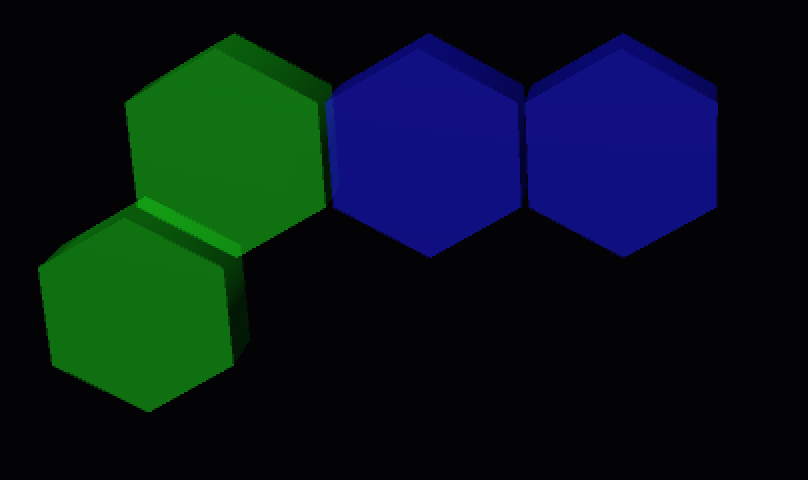

Colorgy is a Psychedelic Color mixing puzzle game designed and developed entirely by me. This page is a bit of a post-mortem for the game, sharing what I learned, what I am happy with and what I would do differently. There are also quite a few features that, while I believe adding to the experience, most likely go unnoticed to the player.
Development

I created Colorgy over the course of 6 weeks in a basement in St. Johns Newfoundland. The idea had been spinning around in my head for sometime, so when I was finally able to sit down and code, all the games core features had been planned out. This allowed for very smooth development, I already had answers to all of the major questions.
My main goal with Colorgy was to finish it, to follow the idea to completion. I chose it as a project because I felt all aspects of it (programming, design, graphics, and music) were within my abilities to create.
What I would do Differently
"+1 to agility"

If I was to do this project again, I would make sure to begin testing with users as soon as possible. After release, a few users commented that the cube and diamond system was confusing and that plus and minus would have been much more intuitive. Though I feel plus and minus signs would be somewhat gaudy in a game like this, I have to admit they have a good point. Cube and diamonds made sense to me as the creator of the game, but I failed to get feedback from an honest audience.
Testing with family and friends is great, but to get real honest brutal feedback one has to go to the internet.
Game Play
The basic premise of Colorgy is simple: The player must clear all the tiles with a limited number of tools. Once I created the logic behind the tools, it was just a matter of creating levels that used them. I strove to push the tools as far as they could go and to thing of examples of every combination that could be used to solve a level. I developed a system where I would start at the end (a blank level) and add colors and tools to it until I had a challenging level.
"how hard can it get?"
One question I worried pondered as I worked on Colorgy was "how hard can it get?" or more accurately: "will the game be difficult enough to challenge the most advanced players?" I can say with confidence that the game can get very very hard. I have played through all the levels several times and there are still some of them that can stump me for 20, 30, to 60 minutes. Part of this difficulty is owed to the modal level design (see Programming and Data)What I would do differently
"too easy and too hard"
It is impossible to please everybody, initial feedback I received from the gaming community was that the difficult puzzles were really great, but it took too long to get to them. On the flip side, when testing with people less familiar with games, they needed more ‘tutorializing’.
Another issue is the the vortex, one of the most interesting pieces in the game, doesn't make an appearance until mid way through the game. This was deliberate, as the vortex puzzles are some of the most difficult and disorienting, but having it in the middle fails to show case it to a casual player.
To solve both these issues, I would have a less linear nature to the game and allow the user to attempt the more difficult levels right away.
I think adding some sort of meta play would engage the player further; each levels earn the player points which they can use elsewhere.
Graphics and Animation
I wanted the players actions to feel weighty and meaningful. The nova causes tiles to explode in a cloud of light. The cube nova absorbed the tiles colors before exploding in the abyss. The diamond nova causes the tiles to ripple out like a shock wave as their colors change. I feel very happy with how the animations look and feel and it is amazing to me how much it changes the feel of the game.
I made the design choice to have Colorgy take place on a single screen, with the colors from previous levels still falling into the abyss even when the player has moved to the next level. I feel really happy with this choice. There is a sense of orientation, of knowing where one is. I think of the early Mario Brothers title screens that have Mario standing there waiting before the game has even begun, in a way, preparing the player for what the game will look like.
What I would do differently
"color wheel?"
As I worked on Colorgy, I became very familiar with the color wheel and which two colors make what. I found for a lot of players, this was not always obvious or intuitive. To further confuse things, many people are used to RGB color values rather than the red-blue-yellow system I was using.
In future I would add additional visual cues to differentiate between primary and secondary colors, perhaps having a different texture for each (smooth crystal for one and jagged ore for the other).
Music and Sound FX
Though I had much of the gameplay planned out before I started coding, I had no solid plan for the music and sound effects. "Do player's even care about music in mobile games?" "Will they just turn the sound off anyways?"
I put a great deal of thought into the music in Colorgy. On the one hand, I felt a puzzle game should have somewhat minimal music, nothing that would distract the player from the task at hand. And nothing too repetitive that would grate on the player's nerves.
I decided I wanted to do something dynamic, something that synced with the player's actions and tied in with the game mechanics themselves.
"Music Theory Alert!"
I decided to have each gameplay action would have a chord assigned to it. Clearing hexes with the nova played a maj9 chord. Absorbing colors with the cube nova plays an augmented chord. Adding color with the diamond plays a suspended 4 chord. The vortex plays a chord made from the hexatonic scale. I felt the flavour or character of each chord reflected the associated gameplay action. The vortex and the diamond can never be used to finish a level, so it is appropriate that they have an unresolved nature to them.
Rather than repeat those same chords every-time, the voicing of the chord would be higher and higher as the level progresses, building to a nice sense of cadence and completion.
"if that didn't make sense..."
Try it for yourself. Below you can hear the main sounds for Colorgy and how they change as the level goes on.
| Nova | ||||||
| Cube Nova | ||||||
| Diamond Nova | ||||||
| Vortex Nova | ||||||
| Beam | ||||||
| Cube Beam | ||||||
| Diamond Beam | ||||||
| Vortex Beam |
sound examples for the sphere, cube, diamond, vortex, and pyramid will be up soon.
What I would do differently
"alone in the dark"
I am very happy with the music and sound design of Colorgy and there isn't very much I would change. The game can feel a bit static when the player is not making a move. I would possibly add some ambient sound, maybe a drone on 'C' or some simple percussion sounds that wouldn't clash with the sounds of the player's interactions. With sound and music being so synced to the player's actions, the challenge becomes creating background sounds that feels distinctly background, something that won't distract or surprise the player or make them think something is happening on the gameplay level.
Programming and Data
Modal Levels
To get more replayability out of each level, I implemented what I called 'modal system' and flipped levels around in their orientation and their color scheme.
| On the right, we have a very simple level. |
|
|
there are four ways we can orient it. Though it is still functionally the same level, it prevents the player from simply memorizing the solution. |
|
|
On top of this, there are also six ways the level can be 'rotated' by color. |


|
Again, these are all functionally the same level with the same solution, but with a different presentation. With all four directional rotations, and all six color rotations, that means that each level has 24 unique mutations.


With 200 unique levels that becomes 4800 posible level orientations.
This was very useful for testing the levels, as I could not simply memorize the puzzles solutions. Each time I tried a level I would have to approach it as new. I could see this technique being used in other circumstances to get more replay-ability out of a set of levels.
|
In addition to this, the tools on the right hand side of the screen are scrambled to prevent the memorization of what order those are used. |

What I would do defferntly
"0 == 1"
When I set up the gameplay, I stored each tile's color as an integer from 0-5. In retrospect, an enum would have made more sense but this system worked fine. This system allows for very simple color checking where colors can be literally added together (red 0 + blue 1 + 2 = purple 3)(orange 4 - red 0 - 2 = yellow 2 ) (< 3 are primary , >= 3 are secondary). Where things get tricky is, the levels are saved as .txt files where 0 signifies an empty tile, and numbers 1-6 signify the different colors. This means every-time the levels are loaded, the values need to have +1 added, and every time they are saved they need -1 added. Again, this all works fine now that it is set up, but I could have saved myself a headache by simply saving empty tiles as '_' or '-' or anyother character. My take away from this is make things as easy for yourself and other developers as possible.
"show off more..."
I am very happy with the modal nature of the levels and the scrambling of the tools. I think it adds a lot to the users experience, but to a first time observer, it most likely goes unnoticed. In interest of making Colorgy a better portfolio piece and to better showcase my skill, perhaps it would be better to draw more attention to these elements.
Level Editor
What I would do differently
Though the level editor was extremely useful to me as a developer, I don't believe many players ever used it. I think I would have held off making it presentable to the user until there was a demand for it.
Also, it would have made things much easier if the user could test their levels inside the level editor it self. As of right now the user would have to save the level and leave the level editor to test it. This could have the added bonus of only allowing levels to me saved if the player is able to complete them, preventing the player for saving unbeatable levels.